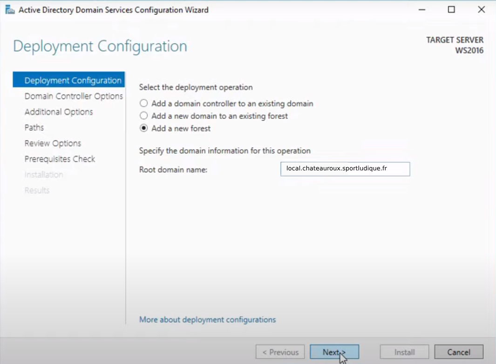

5/ Contrôleur de domaine
Installation de l'Active Directory ?
Tout d'abord nous utiliserons un logiciel qui est dedié pour le cloud computing :

Qu'est ce que Nutanix ?
Nutanix est une entreprise spécialisée dans les solutions de gestion de l'infrastructure informatique et du cloud. Elle propose une plateforme hyperconvergée qui combine stockage, calcul, virtualisation et gestion des ressources au sein d'un seul et même système. Cette approche simplifie la gestion des centres de données, permettant aux entreprises de déployer et de gérer leurs applications de manière plus efficace.
La plateforme Nutanix est conçue pour rendre l'infrastructure informatique plus flexible, évolutive et résiliente. Elle permet aux entreprises de réduire les coûts et la complexité associés à la gestion de leur infrastructure, tout en offrant des performances accrues pour leurs applications.
En résumé, Nutanix propose une solution hyperconvergée qui transforme la gestion de l'infrastructure informatique en simplifiant les opérations et en améliorant la flexibilité et la performance des applications.
Qu'elle configuration ?
Pour la configuration de notre VM (Virtual Machine) Nutanix, on a tout d'abord rejoins le menu Nutanix, puis par la suite entrer les paramètres suivants :
Configuration

Resources

Management

Installation de l'Active Directory
Pour installer l'Active Directory nous sommes passés par l'ISO Windows Server 2022, une fois l'installation faite (la même installation qu'un ordinateur lambda)
Avant le paramètrage et l'installation des rôles souhaitaient on va configurer une adresse IP statique à notre serveur :

Une fois l'adresse IP attribuée nous irons sur cette fenêtre :

Active Directory Domain Services

A la place du mylab.local entrer votre nom de domaine que vous voulez
Ensuite next jusqu'à Additional Options :
Et dans cette section entrez-y votre nom de domaine (dans l'exemple MYLAB) Le notre se transformera par la suite par local.chateauroux.sportludique.fr
DHCP
Pour la configuration DHCP :
Tout d'abord, il a fallu réfléchir aux étendues qu'on voulait attribué pour les VLANS, dans notre cas nous avons choisis le VLAN 215 qui est attribué à tous les postes clients de notre réseau qu'on a décidé d'appeler "VLAN215_USERS"
Pour se faire on ira dans la section DHCP puis nous arriverons sur cette fenêtre, il suffira de faire dans notre cas (IPV4) faire un clic droit sur notre section donc IPV4, puis nouvelle étendue :
Configuration de l'étendue (DHCP)

On procèdera alors à la configuration des options DHCP :
Dans la passerelle on y configurera la passerelle choisie et qui a était configurée en amont dans notre Switch : 172.28.5.254 pour la passerelle du réseau USERS

Normalement automatiquement votre nom de domaine sera inscrit automatiquement :

Pour finir un dossier se créera dans la section IPV4 au nom de votre étendue ce qui correspondra à votre étendue :

A la fin de votre configuration DHCP dans la catégorie Serveur Local vous devriez avoir ceci :

Le DHCP ne fera pas son "job" étant donné qu'il n'est pas dans le même réseau que les clients c'est pour cela qu'il faudra activé le relais DHCP pour permettre au DHCP de faire son travail tout en étant pas dans le réseau